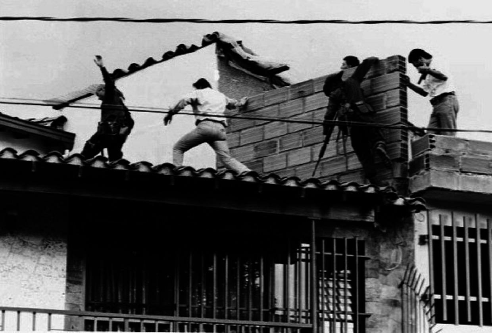

Search for Pablo Escobar
Pablo Escobar
Pablo Escobar was a Colombian drug trafficker and the leader of the Medellín Cartel, one of the most powerful criminal organizations of the late 20th century. At the height of his influence in the 1980s, Escobar controlled a significant share of the global cocaine trade. Following years of violence and political pressure, he became the target of an intensive manhunt conducted by Colombian authorities with support from the United States.
Background
Born in 1949 in Rionegro, Colombia, Pablo Escobar rose from small-scale criminal activity to become one of the wealthiest and most influential figures in the international drug trade. Through the Medellín Cartel, he built a vast trafficking network that transported cocaine primarily into the United States.
Escobar's relationship with the Colombian state grew increasingly confrontational during the late 1980s and early 1990s. His organization was linked to bombings, assassinations and widespread intimidation campaigns. As violence escalated, the Colombian government intensified efforts to dismantle his network and capture him.
The Manhunt
By the early 1990s, Escobar had become the primary target of a coordinated search effort led by Colombian National Police units, most notably the Search Bloc. Unlike earlier attempts to capture him, this phase of the manhunt relied heavily on signals intelligence and urban tracking techniques.
A major shift occurred when authorities began using radio-frequency tracking to monitor Escobar's communications. Because he frequently used telephones to contact family members, investigators were gradually able to narrow down his movements within Medellín. U.S. agencies, including intelligence and technical support teams, assisted Colombian forces in refining these surveillance methods.
Despite repeated close calls, Escobar continued to evade capture for months by moving between safe houses within the city and relying on a network of loyal associates.
Discovery & Death

On December 2, 1993, Colombian authorities intercepted a phone call made by Escobar to his family. Using signal triangulation, the Search Bloc traced the transmission to a residential neighborhood in Medellín.
Police units quickly moved to surround the location. As forces closed in, Escobar attempted to flee across the rooftops of adjacent buildings. During the confrontation that followed, he was shot and killed.
Images of Escobar's body on a Medellín rooftop circulated widely in international media and came to symbolize the end of one of the most extensive criminal manhunts in modern history.
Aftermath
Escobar's death marked the effective collapse of the Medellín Cartel's dominance in the global cocaine trade. However, it did not end large-scale drug trafficking in Colombia, as other organizations later filled the power vacuum.
The manhunt for Pablo Escobar is frequently studied as an example of coordinated urban pursuit operations combining human intelligence, electronic surveillance, and specialized police units. It remains one of the most well-documented law enforcement operations of the late 20th century.